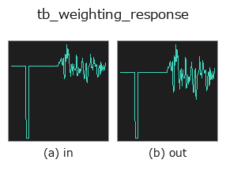

typed op• データ種: signal → signal
• 呼び出し: fullseye.apply(img, "tb_weighting_response", a=0.5, b=0.5) (2-D は 1 画像 + 2 スカラつまみ a,b∈[0,1] のモデル)

*図は合成の入力 128×128 で実際に走らせた出力。左が入力、右が出力。点群は上から見た散布(明るさ = z)、1-D 列は折れ線、体積は z 方向の最大値投影、動画は中央フレーム、複素画像は振幅、絵にならない返り値は値そのもの。*
*つまみ a は出力を変えない(実測: 0.1 / 0.5 / 0.9 で同一)。*
*つまみ b は出力を変えない(実測: 0.1 / 0.5 / 0.9 で同一)。*
段階(前置きの op → この op。左から順):
▸ tb_weighting_response: stages (docs site)
別の画像でも(合成シーン / 写真 / 硬貨。上段が入力、下段がその出力。つまみは既定):
▸ tb_weighting_response: other inputs (docs site)
指定した周波数における A/C/Z 周波数重み付け曲線（dB単位）。
> 以下の詳細説明は原文のままです —— 要約と見出しは訳出済み。
Computed from the four pole frequencies that *define* the networks and
normalised so that the response at 1 kHz is exactly 0 dB by construction
— the curve is divided by its own value at 1 kHz rather than having a
published offset constant added to it. That is why the tests can assert
equality at 1 kHz to 0.0 rather than to a tolerance, and why no standard's
table of attenuations appears anywhere in this repository.
The response depends on `f only through f**2`, so it is an even
function and negative frequencies are evaluated at `|f|` — that is the
definition, not a repair. `f = 0` has zero response (both curves have a
zero at DC) and is reported as `floor_db rather than -inf`.
Measured (computed, then printed — these are outputs, not transcriptions):
======== ========= =========
f (Hz) A (dB) C (dB)
======== ========= =========
10 -70.4304 -14.3300
31.5 -39.5250 -3.0305
100 -19.1428 -0.2996
1000 0.0000 0.0000
4000 0.9633 -0.8260
10000 -2.4918 -4.4055
20000 -9.3469 -11.2786
======== ========= =========
`A(1000) and C(1000) are exactly 0.0` — the Python float, not a
rounding — because of the construction. The low-frequency asymptote is a
closed form and is asserted in the tests: `A` falls at exactly
80 dB/decade as `f -> 0 (f**4 over three constants) and C` at
exactly 40 dB/decade (`f**2`). Measured between 0.001 and 0.01 Hz with the
floor lowered out of the way: 79.999998 and 39.999998 dB/decade.
That last caveat is real and is why the floor is an argument: with the
default `floor_db = -200` the A curve reaches the floor below about
0.35 Hz (unfloored, `A(0.1) = -228.55` dB), so the asymptote measured
against the default floor comes out as 0.0 dB/decade between 0.01 and
0.1 Hz — a clamp, correctly reported, that would look like a bug if the
floor were not visible.
Returns a float64 array the same shape as *freqs*.
Raises `ValueError`: a non-1-D / non-finite / complex / masked
`freqs, an unknown kind`.
Typed bridge of the acoustics op `weighting_response into the 2-D evolution registry: the same implementation, called under the op(v, a, b) convention. This op has no tunable parameter; a and b` are unused.
• サンプルデータ カタログ(DL URL / ライセンス) — 2-D は skimage.data(BSD/public)+ 合成、3-D は実データ源(Stanford/PDS 等)の DL URL。
• 演算子の来歴・参考文献 — この op 族の元になった研究/手法の出典。
下のプログラムは実際に走ることを確かめてある(図と同じ入力)。Studio のヘルプではこのブロックがボタンになり、その場で読み込んで実行できる。
img_to_signal 0.50 0.50 tb_weighting_response 0.50 0.50
▸ Load this pipeline · Load & run
次の例は元の台帳 op weighting_response を呼ぶもの。この橋渡し op は同じ実装を fn(v, a, b) 規約に合わせただけなので、挙動はそのまま当てはまる(呼び出し形だけ違う)。
• acoustic_condition_monitoring — py -3.11 examples/acoustic_condition_monitoring.py
signal を入力に取れる)identity · tb_create_funct_1d_array · tb_smooth_funct_1d_gauss · tb_smooth_funct_1d_mean · tb_derivate_funct_1d · tb_integrate_funct_1d · tb_zero_crossings_funct_1d · tb_abs_funct_1d
typed)tb_points_to_voxel · tb_estimate_point_normals · tb_iss_keypoints · tb_project_points · tb_render_point_depth · tb_statistical_outlier_removal · tb_radius_outlier_removal · tb_voxel_grid_downsample
*Provenance: ops.py — 2D operator registry. この per-op ノートは tools/opdocs.py md が自動生成(手編集しない)。*
© 2026 Kazufumi Furuse — Fullseye operator documentation. Licensed under Apache-2.0.
{kind=link}
{kind=link}